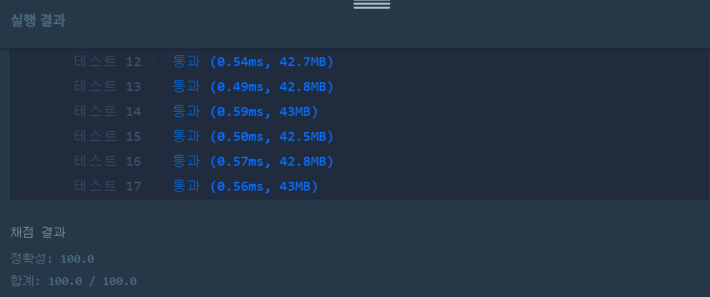

문제
https://programmers.co.kr/learn/courses/30/lessons/12947
( ᐛ )و 도전
1. 설계
- 나머지 연산으로 자릿수의 합을 구해 total에 저장한다.
- x%total==0인지 체크한다.
2. 구현 (성공 코드)
/**
*
* @author HEESOO
*
*/
class Solution {
public boolean solution(int x) {
boolean answer = true;
int total=0;
int originX=x;
while(x>0){
total+=x%10;
x=x/10;
}
answer= originX%total==0 ? true : false;
return answer;
}
}
3. 결과
 성공٩(˘◊˘)۶
4. 설명
- 나머지 연산으로 자릿수의 합을 구한다.
- 10으로 나눈 나머지로 각 자릿수를 알 수 있다.
- x의 값은 계속 바뀌므로 최초 x의 값을 originX에 저장해둔다.
- 하샤드 수인지 검사한다.
- total%originX==0이면 하샤드 수이므로 true, 아니라면 false를 리턴한다.
해결 완료!
int x를 String형변환후 split()로 쪼개어 자릿수 합을 구한 코드도 있었다. 그것보다는 이게 더 간단한 것 같다.